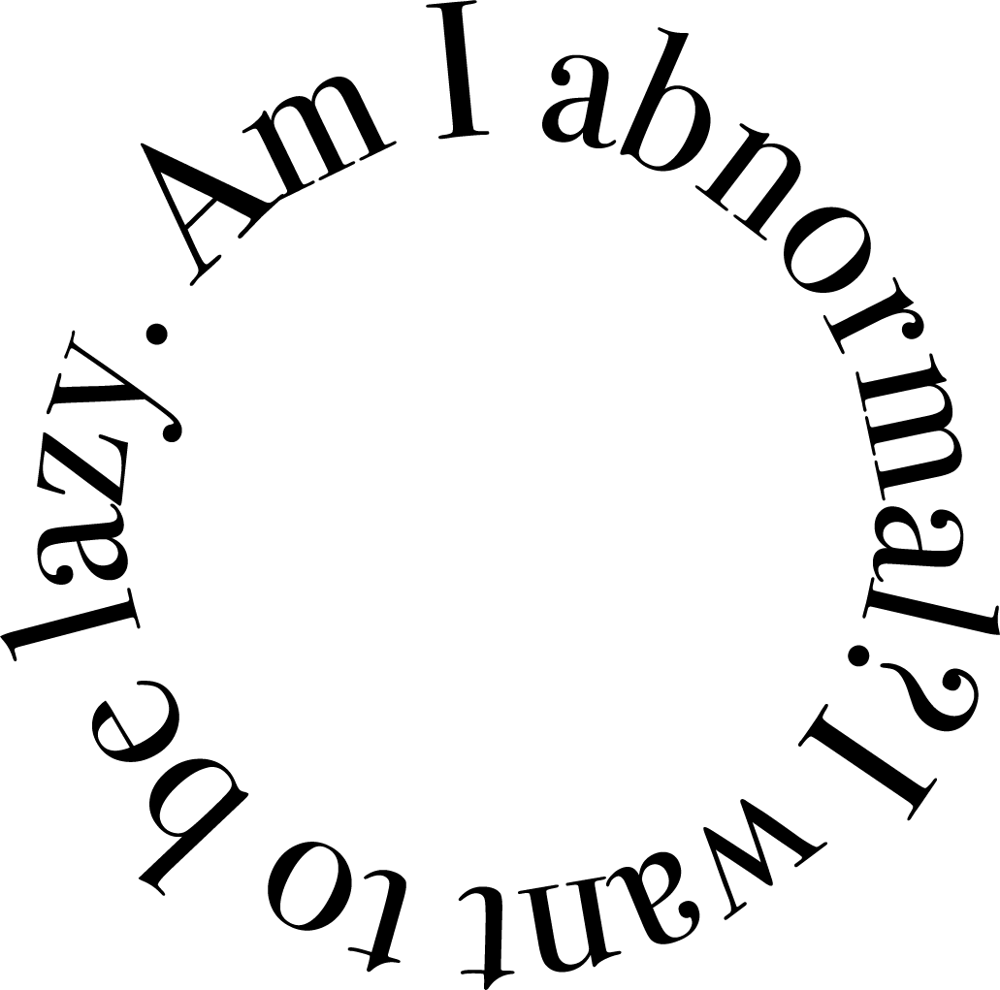

On this page,
2022년에 홍예지라는 사람이 어떤 것을 좋아하고, 어떤 생각을 하는지에 대한.
지극히 개인적인 이야기를 해보려 합니다.
제가 좋아하는 것을 보시고 여러분이 좋아하는 것이 무엇인지도 공유해주세요.
2022년에 홍예지라는 사람이 어떤 것을 좋아하고, 어떤 생각을 하는지에 대한.
지극히 개인적인 이야기를 해보려 합니다.
제가 좋아하는 것을 보시고 여러분이 좋아하는 것이 무엇인지도 공유해주세요.
Favorite
{
BOOK
2022년 한해 동안 제가 읽어보았던 책들입니다.
어릴 때부터 좋아하던 동화, 선물 받은 에세이, 간지나 보여서 읽어본 인문학, 도움이 될 것같아 읽어본 경영 등...
웬일로 다양한 책을 읽어본 한해였네요. 나름 읽어보실만한 거로만 보여드려 보려고 합니다.
전부 괜찮은 책들이니까 한번 읽어보세요.

MUSIC
2022년에 듣고 관심이 가게된 아티스트와 음악들을 소개해보려고합니다.
올해 데뷔한 아이돌부터 과제할 때 많이 찾게 된 음악, 예전부터 오래도록 들어온 음악 등이 있습니다.
여러분은 좋아하는 음악장르, 아티스트가 있으신가요?

MOOD
2022년에 사진첩을 돌아보니 의외로 제가 많은 무드들을 좋아하는 것을 알았습니다.
가끔 줒대가 없다고 느껴질 때도 있지만, 어쩌겠어요.
차차 더 알아가겠죠.
FOOD
2022년부터 입맛이 달라졌던 것같아요.
예전에는 무조건 육류가 좋았는데, 최근에는 야채가 더 좋아졌던 것같아요.
입맛 바뀌자마자 물가상승 장난하냐